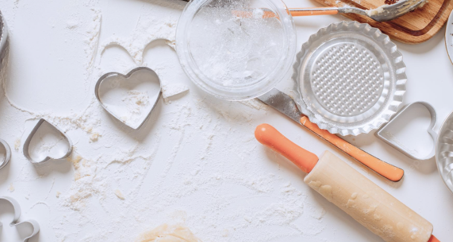
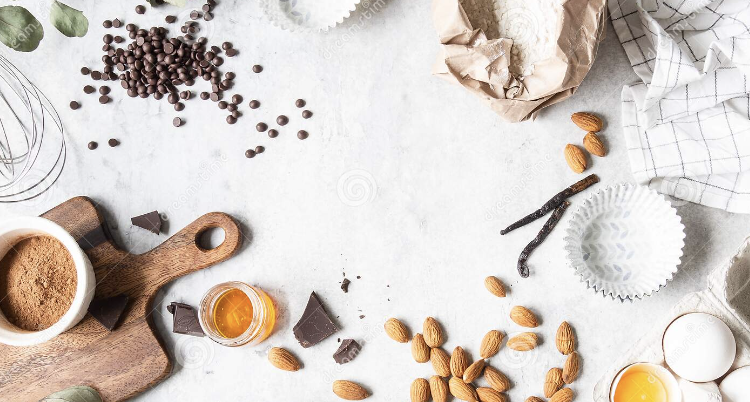

Welcome to my Website!
My name is Caitlin O'Grady, and I am the creator of this website. I love to bake, and I wanted to have a place to compile all of my favorite recipes, for my use or yours! Please enjoy, and read below about what you can do on each page of this website. Click on the navigation links above, or on the hyperlinked titles below!

Main Page
This is the page you are currently on! It is meant as a homepage, meant to orient you to what you can find on this site!

Recipes
This page gives you many recipes, in many different categories to choose from. Peruse them all, or use the filter buttons to find the recipe you want!